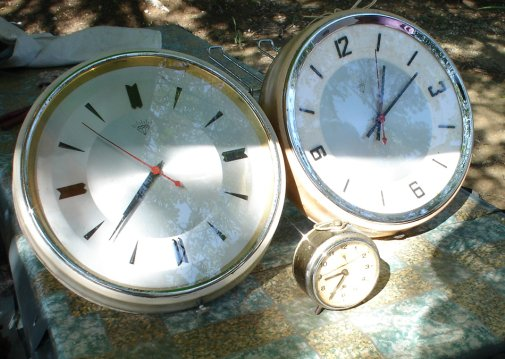

Savoir quand optimiser

- Ne pas optimiser avant que le programme ne fonctionne
- Ne pas optimiser si le programme est déjà rapide
Ne pas optimiser
- Optimiser peut obfuscer le code
- Optimiser peut introduire des erreurs
- Ne pas optimiser pour un gain inférieur à 5%
Autres arguments
- Optimiser rend impuissant
- Optimiser mange des enfants
- Optimiser vote Front National
- Optimiser viole des grand mères
- Mais nan, je déconne !
Savoir quoi optimiser
- Utiliser le profiler « hotshot »
- Mesure le temps passé sur chaque ligne du code
- (démonstration avec hachoir-metadata)
- Savoir interpréter les résultats
Astuces
- Tester plusieurs algorithmes
- Limiter les appels aux fonctions lentes
- Utilisation d'un cache
- Réécrire le code critique en C ou C++